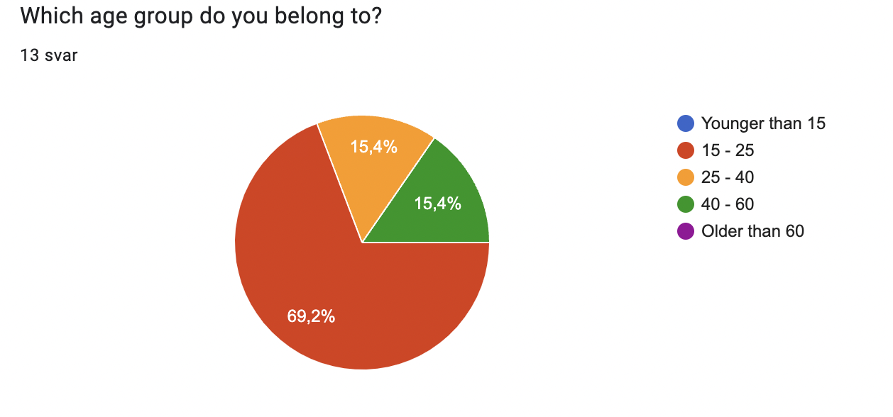
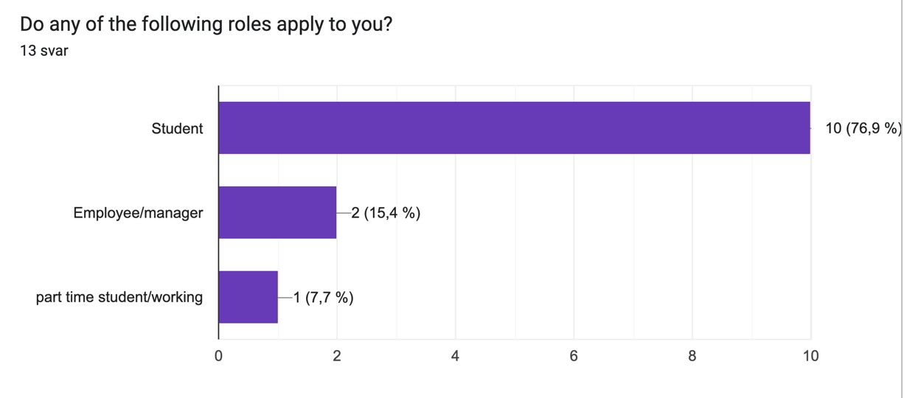
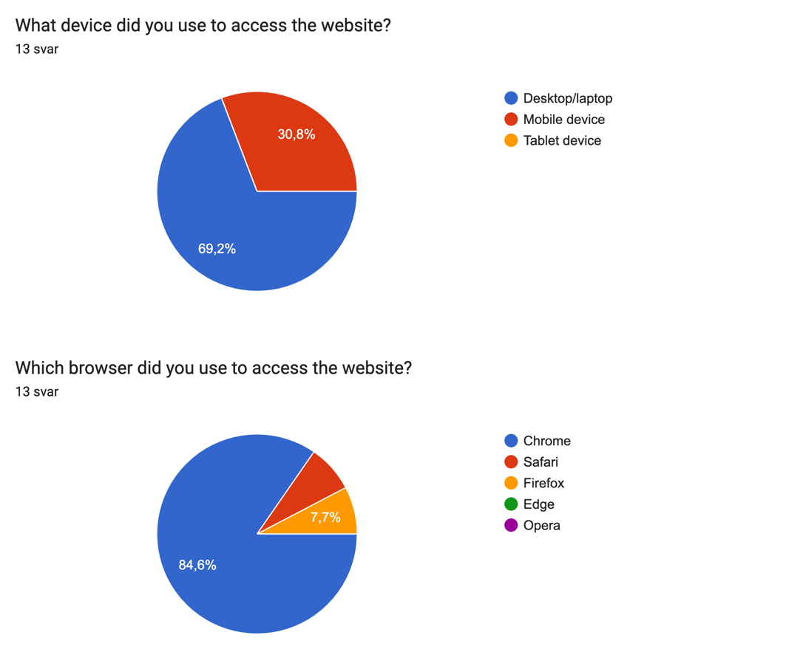

P4 Project Testing
Brage, Caroline, Christer, Karl Emil, Karl og Vebjørn
21.10.22
Client name: Norsk Natur for Turister
Website name: currentharvest.no
Contact person: Ola Nordmann
We used the form found on this adress: https://forms.gle/dagnQ5pF1nBYJrqSA
To summarize, this form collected some general information about each user such as age group, occupation, what platform was used to access the site. Following this, the user was asked to rate the user experience in the categories: navigation, visual design, content and overall user experience. This feedback was recorded both numerical with ranges from 1-6, and in plaintext asking the user to highlight areas that stood out in either direction. Thus, we could gain an good overall understanding of the user experience, and find which areas needed the most attention going forward.
Our intended audience for the site is tourists, and we found in practice that reaching out to this particular audience for a non-functional site would be quite cumbersome. We therefore decided to do the next best thing, reaching out to people in our social circles who would be willing to test the website and provide honest feedback. These testers did a wonderful job providing very valuable and unbiased feedback, while not sugar coating any issues they found. Unfortunately, no live testing was deployed during this project. This is something we will definitely keep in mind as an option for further projects going forward. In total, 13 testers were deployed, of which the demographics were as follows:
 Our testers accessed the website using both mobile- and computer devices. From the statistics we found that desktop/laptop was the predominant test interface, with a total use of 69.2%. The website was tested on three different browsers, of which Google Chrome was the by far most popular choice followed by Safari and Firefox respectively. Furthermore, the website had testers on both Mac and Windows computers, aswell as Android and Apple mobile devices. We therefore think that the test coverage has been sufficient to highlight potential bugs or problems for specific browsers or platforms.
Positive: Several users remarked that the navigation was very simple and intuitive. They especially appreciated that the navigation was also customized for mobile users. There were no issues swithcing between pages, and few clicks were required to complete actions. People really enjoyed the clear page structure with separate pages for fruits, berries and mushrooms, making it very easy to navigate. The implementation of a search bar was positive, minimizing user actions to the end point. Highlighing the nav bar items on hover took away confusion.
Negative: Could make it more obvious that elements were meant for navigation, eg. highlight them more when hovering to make them seem more clickable. Remarks that the content boxes showing which items were in season were not clickable, just the pictures of the items. This lead to some confusion for several users, wanting the whole section as a clickable object. One user indicated that the navbar was a bit untidy making it hard to use, while also remarking that positioning the navigators a bit more centered on the page would make them stand out more.
Positive: In general, users remarked that the overall visual apperance was coherant and worked well togeather. Some liked the color themes, saying they worked very synergistically with the content theme. The photos selected were also positively recieved, both for quality, colour palette and sizes. Not quite sure if positive or negative, one user said the colour was stuck in their mind causing a minor identity crisis.
Negative: Some felt there was too much brown on the website, and that the slideshows on the info pages were distracting. To add to this, another user felt the pictures were changing too quickly, especially the animation. A few mobile users remarked that contents appeared a bit small, and could be scaled better. One user reccomended removing the spaces between the individual searchbox items in the dropdown menu.
Positive: Users indicated that it was very easy to see what was in season, and were overall very pleased with the contents of our website. Clean and orderly layout, search function integrated seamlessly. Nothing was missing.
Negative: One user wanted more items to be displayed as in season, but also mentioned that the work required would be greater.
Positive: Genereally very positive and encouraging feedback, and it seemed users left the website with a positive experience. Users especially highlighted the searchbar, and that the website felt fast and responsive. As seen in the scores, some users were not completely satisfied, but did not leave specific reasonings in the comments.
Negative: Some minor negative observations were mentioning individual differences between image sizes causing some negative associations. Users wanted the option to search in other languages than English, as you do not always know the english name of the item. Adding more species would be appreciated greatly.
We were very grateful and fortunate to have recieved very honest and detailed feedback. Overall, we feel that most of the suggestions from users were specific minor details and preferences that could be implemented with a modest amount of work. Based on the feedback and scores recieved, it appears that the visual design requires the most work. Here we could, time allowing, refine and sharpen our design to both better suit mobile users, aswell as giving it a more universial appeal. For instance, we could consider changing the colour-theme of the website, optimizing the css-styling to suit mobile and slowing slideshow animations. In regards to functionality, a script could definitely be implimented to allow seach functionality for several languages. Also, making the clickable area span the entire section for each item could be solved with some HTML and CSS modifications. Most importantly, none of the suggested changes were precieved to be outside the scope of our current skillsets, and the group feels that we could sufficiently adress them all. This is a very postitive take-away message for us, as the users were very thorough in their testing.
First of all, we have all learned alot in this project. In terms of programming every team member has come a long way with both CSS, html and especially JavaSript. Our mockups were really simple in comparison with our final page, but we are really happy with the result. We found it was hard to imagene how the website design should look before we started programming and trying out different implementations. It was this discovery that lead to our departure from the mockups, resulting in a website that works and flows better in a real-world scenario. Furthermore, many steps of the project took alot longer to complete than we initially thought. To counteract this, we decided to meet weekly since the beginning of the project. This really helped us with dedicating time to working on the project evenly although the deadline was months away. Even with our approach, in hindsight we would have worked hard to complete the P3 coding earlier, to give more time to user testing in P4. We found that getting the website to a place were it could be test-ready was a long process, with several unexpected setbacks and bugs. The project has teached us alot about teamwork and responsebility, and more specifically about these themes when working on an actual IT-project. We have been exposed to valuable platforms like Git and Figma, on which communication and cooporation could be effectivized. Along the way we have grown closer together, helped and supported each other, and encouraged creativity and initiative. Therefore we have been very happy with the group dynamic, and feel that each member has overcome challenges and contributed in a very satisfying way. One observation is that it can sometimes be hard to allocate time to a project that is pass/fail, in comparison with a graded project. Some group members had pressing dedlines for tasks that demanded a greater focus, as the stakes were higher. Thus, we had to work around this in the completion of the website.